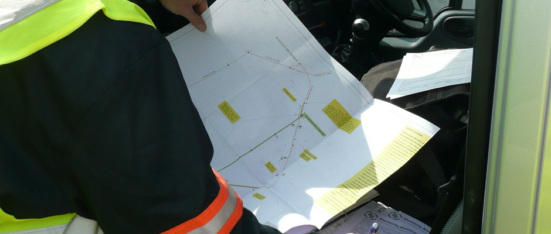

Our work
TEKSS works together with landowners to find suitable sites for development that are technically, environmentally and financially viable and complement the wider aims of the landowner for their landholding.
We are able to offer landowners a full wrap-around development service, taking full advantage of our in-house development, planning, project finance, project legals, grid connection, communications and consultation expertise and excellent track records in these fields.
Leading on both site development and planning, we work with trusted partners and technical and environmental consultancies to ensure sites are fully assessed for relevant environmental, technical and grid criteria and that only the best sites get taken through the planning process.
Our consultation and communications expertise also ensures relevant stakeholders and local communities are informed and fully engaged from the outset.
If you would like to find out more about how we develop projects or have any development enquiries, please get in touch.